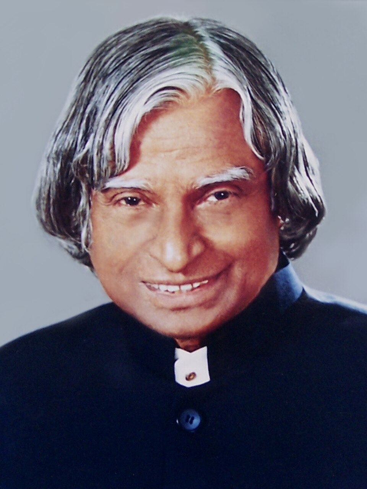

The Beginning
The early stage of a journey that shaped the personality's future achievements and values.
A Tribute
Celebrating the journey, achievements, values, and lasting legacy of an inspiring personality.
ABOUT THE LEGEND
The Missile Man of India • Scientist • Teacher • 11th President of India

Dr. A. P. J. Abdul Kalam was an Indian aerospace scientist and the 11th President of India. He played an important role in India's space and defence programmes.
Born on 15 October 1931 in Rameswaram, Tamil Nadu, Kalam came from a humble background and worked hard to pursue his education and scientific career. He contributed to India's satellite launch vehicle and missile development programmes.
As President of India from 2002 to 2007, he became widely known for his connection with students and his emphasis on education, innovation and the development of the nation.
His life continues to inspire young people to dream, learn, work with dedication and contribute positively to society.
LIFE & ACHIEVEMENTS
Kalam completed his aeronautical engineering studies at the Madras Institute of Technology.
As project director of SLV-III, he contributed to the successful launch that placed the Rohini satellite into orbit.
He played a significant role as a scientific adviser during India's Pokhran-II nuclear tests.
He was elected as the 11th President of India and served from 2002 to 2007.
Dr. Kalam passed away on 27 July 2015 while delivering a lecture to students at IIM Shillong.
Journey
The early stage of a journey that shaped the personality's future achievements and values.
Important experiences and accomplishments helped establish a meaningful path forward.
Through consistent effort and dedication, their contributions began reaching a wider audience.
Their work and values continue to influence and inspire generations.
Legacy
A tribute is not only about remembering the past, but also about carrying forward the values and inspiration that continue to matter.